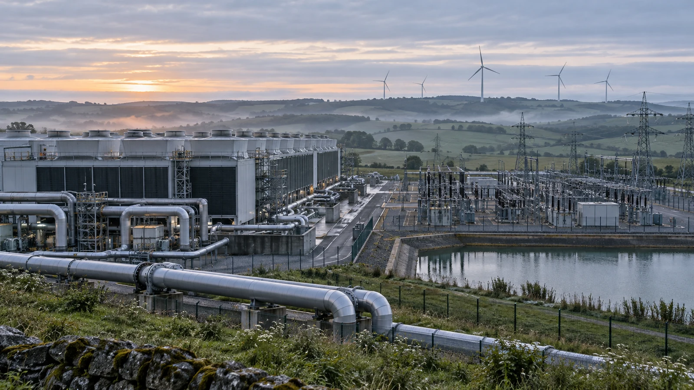

Environnement
IA et environnement
L’IA mobilise des ressources et peut aussi soutenir certains usages environnementaux.
Son calcul et ses équipements demandent de l’énergie et des matières premières ; certaines infrastructures utilisent aussi de l’eau. Des usages peuvent servir à modéliser le climat, optimiser les réseaux électriques ou limiter les gaspillages.

Impact de l’IA sur l’environnement
Risques et points de vigilance
Calcul et émissions · énergie et eau · ressources minières
- Calcul et émissions L’entraînement et le fonctionnement des grands modèles demandent une puissance de calcul importante et génèrent des émissions de gaz à effet de serre.
- Énergie et eau Les centres de données consomment de l’électricité et utilisent de l’eau pour refroidir les serveurs.
- Ressources minières La fabrication des puces, des serveurs et des équipements informatiques nécessite l’extraction de terres rares et d’autres minerais, avec des conséquences écologiques et sociales dans les zones concernées.
Possibilités et progrès
Climat · réseaux électriques · industrie et transports
- Modélisation du climat L’IA peut contribuer à modéliser le climat.
- Réseaux électriques Elle peut aider à optimiser les réseaux électriques intelligents (smart grids).
- Industrie, logistique et transports Certains usages peuvent réduire les gaspillages industriels et améliorer la gestion de la logistique et des transports.
Pour approfondir : PNUE, cycle de vie de l’IA, AIE, usages énergétiques de l’IA, OCDE, mesure des impacts.